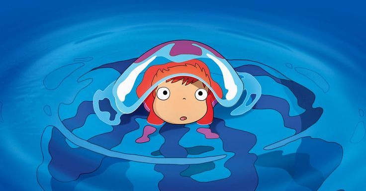
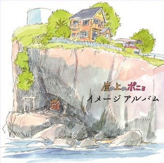
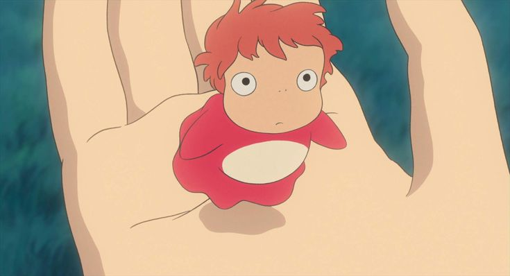
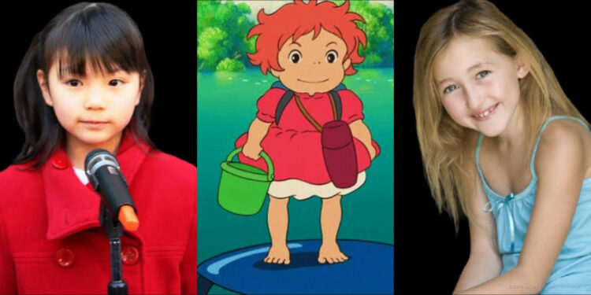
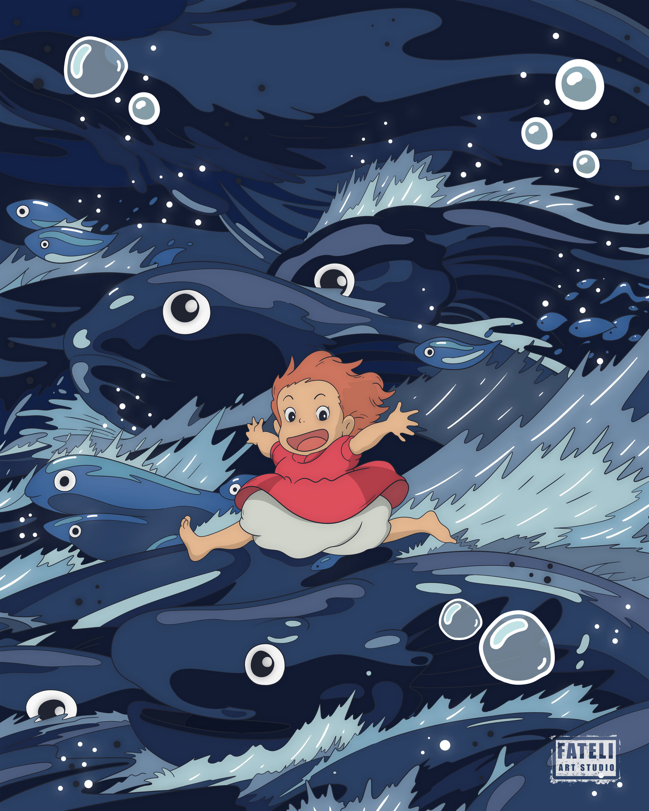

Ponyo is a 2008 Studio Ghibli masterpiece by Hayao Miyazaki. A goldfish princess escapes the sea and befriends a 5-year-old boy named Sosuke, sparking a magical adventure.
Sign up

Hand-drawn entirely without computers, making it one of Ghibli's most unique films.

Inspired by the classic tale of The Little Mermaid by Hans Christian Andersen.

Ponyo's voice in the Japanese version was done by a 9-year-old girl named Yuria Nara.

The ocean waves in the film were drawn by over 170,000 individual hand-painted frames.
"I've seen Ponyo. She looked right at me, and she was beautiful."
Join us and explore the magic of Studio Ghibli's beloved ocean adventure.